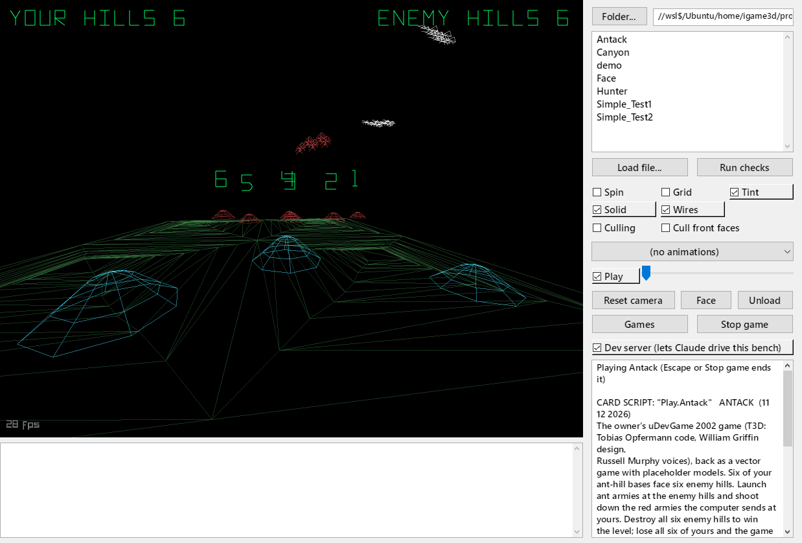
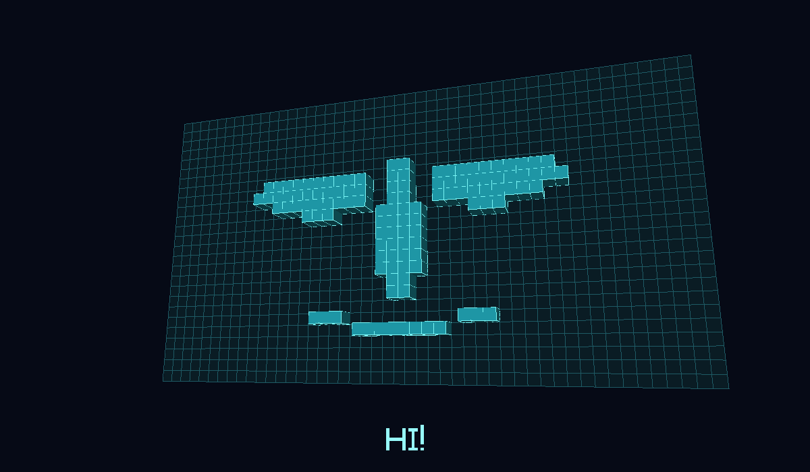
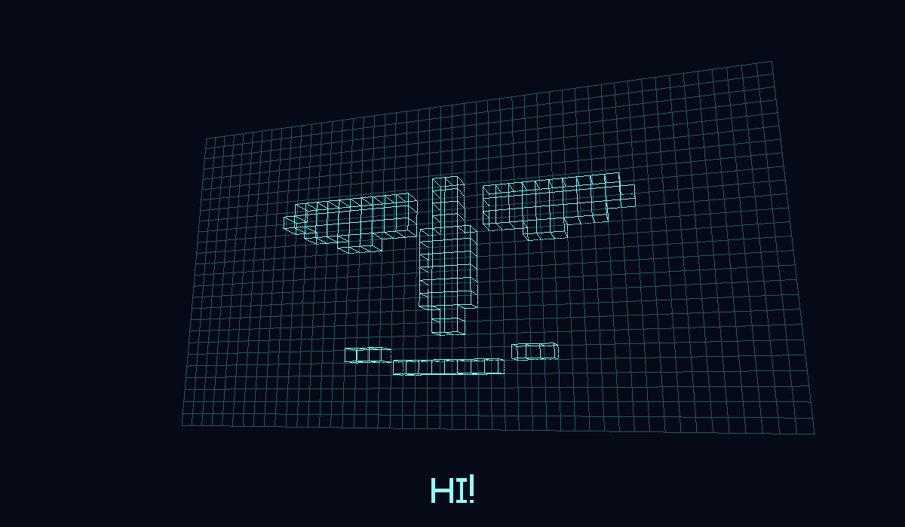
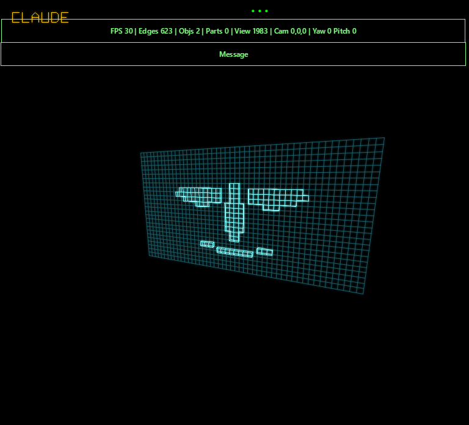
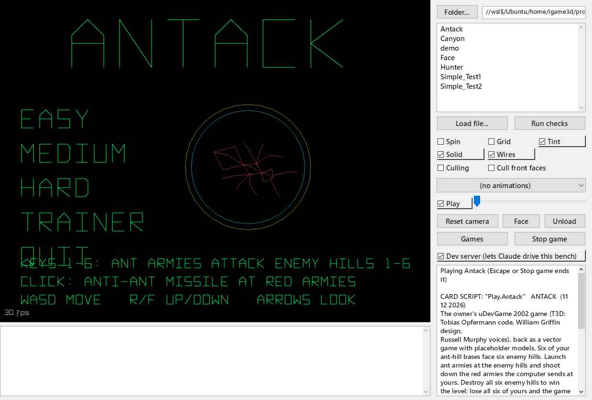
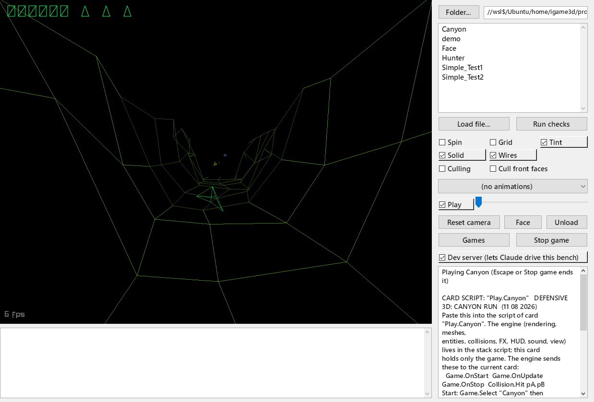
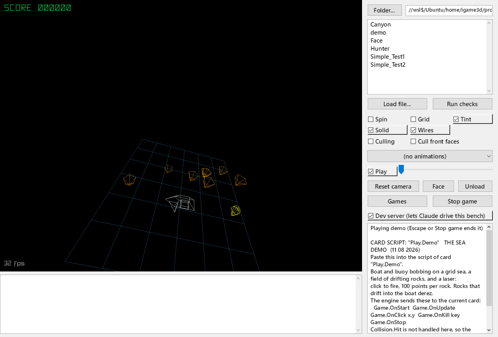
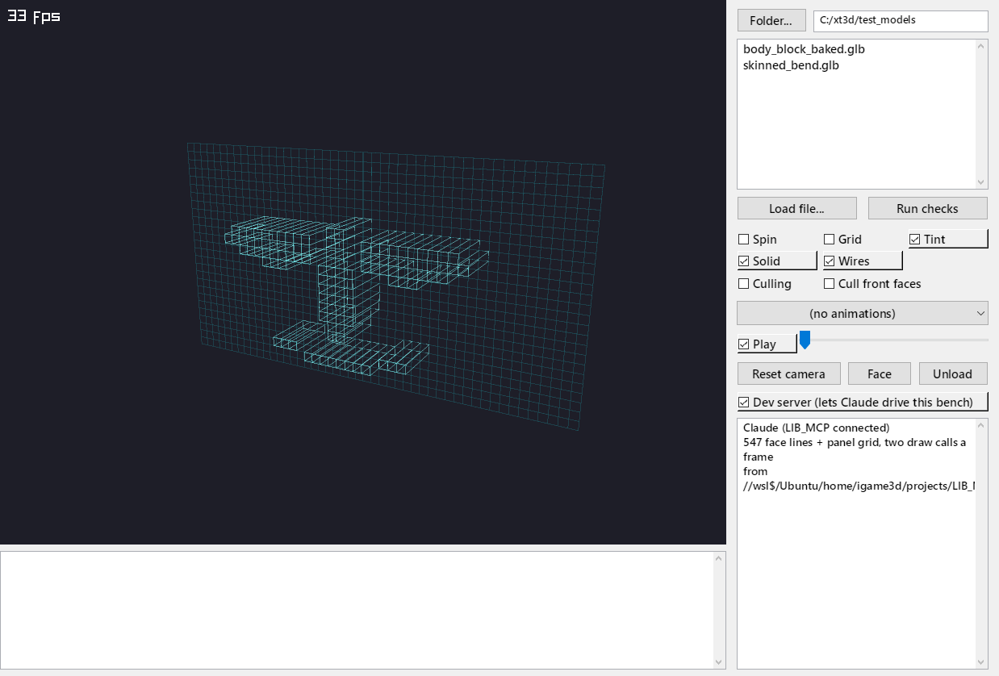

Vibecode3D_
Describe a game in plain words, and get a vector game back: glowing wireframes, arcade HUDs, mazes, enemies that find their way to you.
Two engines are the interface. You run one, connect an AI, and say what you want. The AI builds with the LIB_* parts, checks its work inside the engine, and shows you a screenshot. You say yes or no.

What is this, in plain words
If you have never heard of any of this, start here.
The engines
Vibecode3D and xt3d are game engines you run as ordinary programs. Each has a 3D view, a list of games, and a switch that lets an AI drive it. This is where you start.
Vibecoding
You say what you want. An AI (Claude, or a model running on your own PC) writes the game, checks it inside the engine, loads it and takes a screenshot. You play it and say what to change. Then it goes again.
The LIB_* parts
The small toolboxes the AI reaches for: sprites, mazes, paths, outlines. They all use plain text. A sprite is lines of 0 and 1, and a path is lines of col,row. You can read it and paste it, and an AI can write it. That's the point.
How it works
Five steps. The first two you do once.
- Open an engine. Run
VibeCode3D.exe(pure vector lines) or thext3dbench (GPU 3D). Turn on its Dev server. Windows for now. - Connect your AI. Claude Code, Claude Desktop, or a local model in LM Studio connects through
LIB_MCP. Now the AI can run code in the engine, check scripts and see the screen. - Describe the game. In plain words, for example:
"A boat bobbing on a grid sea. Rocks drift in. Click to fire a laser, 100 points a rock. A rock that hits the boat ends the game." - The AI writes one script, and the engine checks it. A game is one script file with a few hooks: start, update, click, stop. The script is compile-checked inside the engine before you ever see it, then loaded and screenshotted. A first game looks like this (shortened):
on Game.OnStart Scene.ClearAll Mesh.Define "Cube.Box", MeshBox(160, 160, 160) Mesh.Define "Cube.Floor", MeshGrid(10, 10, 60) put Entity.Spawn("Cube.Floor", 0, 160, 600, "#2E6F8E") into sFloorKey put Entity.Spawn("Cube.Box", 0, 0, 600, "cyan") into sCubeKey HUD.Set "Cube.Title", "SPINNING CUBE", 20, 20, 14 end Game.OnStart on Game.OnClick pX, pY put -sDir into sDir -- click reverses the spin Cube.Spin end Game.OnClick
- Play it. Say yes, no, more. That's your part, and it's the part that matters. The machine is fast, but you decide what's fun.
The script reads almost like English. It's xTalk, from the HyperCard family of languages. You never have to write it, but you can always read it, change it and keep it.
The libraries
The parts the AI builds with. You don't have to touch them, but if you script things yourself, each one is a single file: start using stack "…/lib_bit.livecodescript", then call it. Names start with the library's short name (Bit., Map., Trace.), and nothing touches your globals or your screen.
put Bit.Pad(tLetter, 16, 16) into tCell -- 8x8 character centred in a 16x16 cell put Bit.Count(tCell) into tInk -- how many pixels are filled
put Map.Stitch(tSections, "hall room hall" & return & "room - room") into tWorld put Map.FindPath(tWorld, "2,2", "40,20", true) into tPath -- one col,row per line put Map.MeshText(tWorld, 1, 1) into tMesh -- triangles for a 3D engine
put Trace.MaskToGrid(the maskData of image "logo", tW, tH) into tGrid set the points of graphic "outline" to Trace.Contours(tGrid)
start using stack "LCHarvest2.livecodescript" harvestStack put the result -- folder with manifest.json, stack_*.json, scripts/
tools/lcmcp compile my_game.livecodescript # real compile check from a terminal tools/lcmcp run 'put the version' tools/lcmcp errors 3 # last script errors, translated
LIB_MCP runs any code it is sent. It only answers on 127.0.0.1 and checks a token, but never put it inside an app you give to other people.
One grid, three pictures
This is how the libraries fit together. A face is drawn as 0s and 1s (LIB_BIT). LIB_MAP raises the 1s into blocks and lists their edges. An engine draws the edges.



Engines & games
The libraries are engine-neutral. Two engines use them today, and the same game script runs on both.
Vibecode3D
A 3D engine and editor written entirely in xTalk script, about 8,000 lines. It draws vector wireframes in the spirit of 1980s vector arcade machines and the Vectrex. It needs no plugins and no C code. Each game is one card script with hooks like Game.OnStart and Game.OnUpdate.
xt3d
The same kind of scripts, driving raylib 6.2 for real GPU 3D. 493 raylib functions are generated straight from raylib.h, with raylib's own names (xt3d_DrawCube), so anything you or your AI know about raylib carries over. It renders into a window that also holds ordinary buttons and fields. Windows for now.




Status, honestly
| piece | state | next |
|---|---|---|
| LIB_BIT | working, tested | whole-font import/export, animation frames, undo |
| LIB_MAP | working, tested | path caching for big worlds, texture coordinates |
| LIB_TRACE | working, tested | trace holes, simplify points, extrude to 3D mesh |
| LIB_XTJSON | round trip works | shared groups, hidden objects, array custom properties |
| LIB_MCP | in daily use | more tool packs |
| Vibecode3D | plays games | more games from the archive |
| xt3d | Windows, works | see frames over MCP |
| xtalk_py | planning | run xTalk scripts and stacks from Python |
Every library README starts with a three-line example and a table of every handler. Start there.